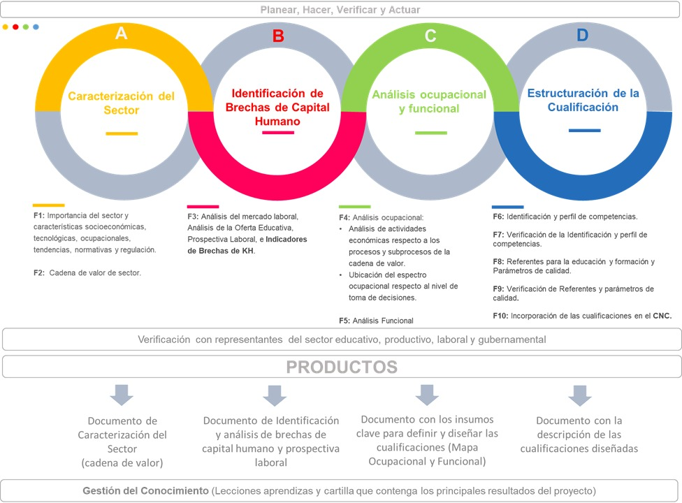

La ruta metodológica para el diseño de cualificaciones se define como la descripción secuencial y ordenada de los pasos que deben realizarse para elaborar cualificaciones sectoriales teniendo en cuenta las características del MNC.
Está compuesta por cuatro etapas y diez fases, sucesivas e interrelacionadas, desarrolladas conjuntamente por actores del gobierno, sector educativo y representantes del mercado laboral, cada etapa concluye en entregables que contribuyen al poblamiento del Catálogo Nacional de Cualificaciones.

Fuente: Mesa de concertación, 2019.